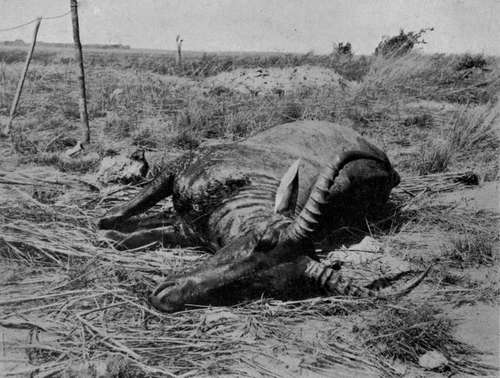

Chapter VIII - I.— Field Notes On The Game. Part 7
Description
This section is from the book "Wild Life In Central Africa", by Denis D. Lyell. Also available from Amazon: Wild Life in Central Africa.
Chapter VIII - I.— Field Notes On The Game. Part 7
Common Waterbuck (Cobus Ellipsiprymnus)
Native Names
Chinyanja - Nakodzwe.
Chingoni - Chuzu.
Approximate weight, | ♂ | 5oolb |
Good average horns, | ♂ | 28in. |
There are several varieties of waterbuck in Africa, and two of them are present in this part of it, the common waterbuck and Crawshay's ; the latter is found in the most northerly parts of North-Eastern Rhodesia.
The difference is slight, as the former shows a white ring on his rump, whereas the latter has a white patch.
A waterbuck has a better carriage than most antelopes, as he does not have a droop in the hindquarters, and when disturbed he holds himself well. Their colour varies considerably, like roan antelopes, but the prevailing colour is an iron-grey brown, and variations of colour will sometimes be seen in the same herd. The hair is often fairly long and shaggy, and generally the bulls have long hair under their throats. My friend George Garden, of Mlanje, in Nyasaland, once showed me a photograph of a bull waterbuck he had shot which had extremely short hair on the body and neck, and without a vestige of the long neck and throat hair common to most bulls of this species. Waterbuck are found in herds, though at certain seasons the bulls will consort together and keep apart from the cows and younger animals.
Waterbuck swarm in the Luangwa Valley in North-Eastern Rhodesia, and they are usually common near all large rivers and lakes. Their name would seem to imply that they live in water, which is far from being the case, although they are never seen far from it. They are fond of living in stony hills bordering rivers, but they drink daily and often lie up close to water. If a hunter is thirsty and sees waterbuck or impala, he may be sure there is water somewhere near. I once saw a wounded one run into the Luangwa River, but, his heart or strength failing him, he stood up to the belly in water, and I put him out of his misery with another bullet, and I have often regretted not having had a camera with me at the time, as he was a splendid picture of an antelope.
The waterbuck, or Steedman's antelope, was discovered by Andrew Steedman, who travelled in South Africa early in the nineteenth century. He published " Wanderings and Adventures in the Wilds of South Africa," 2 vols., 8vo, London, 1835, and exhibited at the Colosseum, Regent's Park, in that year, a panorama called the African Glen, with a large collection of African trophies, birds, animals, native arms, etc., the catalogue of which extends to 346 items, according to a copy in my possession. Steedman named the waterbuck Ellipsiprymnus, from the wel -known circular white mark on its hind quarters.
Hartebeest (Bubalis Lichtensteini)
Native Names
Chinyanja - Ngondo.
Chingoni - Nkonze.
Approximate weight, ♂ ...... | 400lb. |
Good average horns, ♂ ...... | 19in. curve. |
" " " ♀ ...... | 13in. " |
All over Africa various varieties of hartebeest exist, although only one variety is present here—Lichtenstein's.
These antelopes used to be much more plentiful than they now are. They are unusually foolish animals, unless when much hunted, and then they become very wary and difficult to get shots at, especially in thick bush.
Hartebeests are of a companionable nature, and I have often seen them consorting with sable, zebra, and gnu. They are sometimes found in herds up to thirty or forty, but the usual number is from ten to fifteen in places where they have been much molested. Both sexes bear horns, and these are peculiarly shaped, being well curved inwards, and then taking an abrupt bend backwards. The hartebeest has a long skull, and he is not a prettily shaped antelope, like a waterbuck. In moving, they have a stiff action, rather mechanical, and not graceful. They inhabit much the same type of country as sable antelopes, are often found in the the open in the cooler hours, and when the sun gets hot they retire to the shelter of the bush.
I think their meat is very good eating and prefer it to most of the other species except eland, bushbuck, impala, and klipspnnger. There is not a very noticeable difference between the weight of fully grown adults of the two sexes, although the bull is slightly heavier.
Sassaby (Damaliscus Lunatus)
Native Names
Chibisa - Mtengo.
Chiwemba - Mtengo-Maroli.
Approximate weight, | ♂ | 400lb. |
Good average horns, | ♂ | 16½in. curve. |
This animal's name is often written Tsessebe in old books on sport. They are extremely localised in this country and only found in the districts bordering Lake Bangweolo, in North-Eastern Rhodesia. It is strange that they do not occur to the south of this, as they are not present again until the country known as Southern Rhodesia is reached. The heads in North-Eastern Rhodesia are better than those usually shot in the south. Sassaby are fond of the open and seldom go into thick cover, but find shade below small clumps of bush or trees,, where these can be found.
Enormous herds exist, and up to a thousand can be seen together at times. Their skins are a beautiful glossy colour. The females bear horns which are thinner than those of the males, as the horns of females always are in those species in which the females grow them.
Situtunga (Tragelaphus Spekei)
Native Names
Chibisa - Nzowe.
Chiwemba - Nsowe.
Approximate weight, | ♂ | 200lb. |
Good average horns, | ♂ | 28in. curve. |
This is the most water-loving antelope in Africa, and they spend most of their time in swampy country, although I do not believe that they often stand in the water up to the tops of their backs ; for if they did so the crocodiles would quickly decimate, them.
Sassaby - Photo by J. E. Hughes.
They are plentiful near Lake Bangweolo and the rivers flowing into that lake, and they are also found in Lakes Moir and Young, two small lakes widely separated in North-Eastern Rhodesia. They occur, too, near Lake Victoria Nyanza in British East Africa.
Their most noticeable features are their elongated hoofs and their long silky hair. The hoofs spread out in walking and help them to walk in soft ground without sinking.
Continue to:
- prev: Chapter VIII - I.— Field Notes On The Game. Part 6
- Table of Contents
- next: Chapter VIII - I.— Field Notes On The Game. Part 8